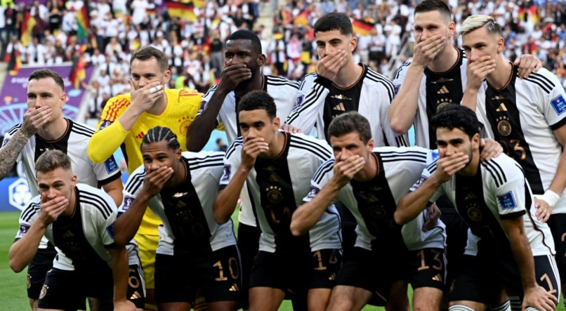
ALEMANHA faz protesto antes do jogo contra o JAPÃO na COPA DO MUNDO; veja o que aconteceu
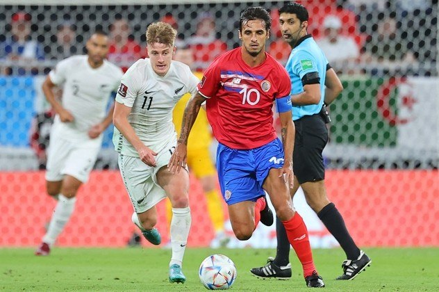
Costa Rica vence Nova Zelândia e garante última vaga na Copa 2022
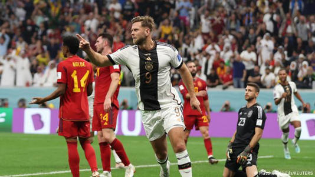
Alemanha empata com Espanha e mantém chance de ir às oitavas
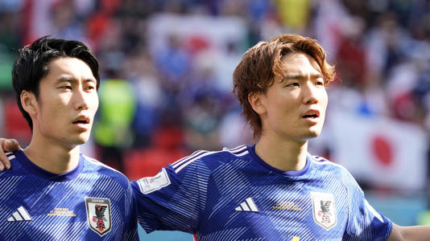
Tabela do Grupo E da Copa do Mundo, classificação 2022: Resultados e jogos atualizados para Espanha, Alemanha, Japão e Costa Rica
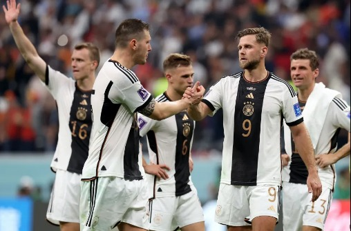
Copa do Mundo da FIFA: Como o Grupo E passou por reviravoltas antes da saída da Alemanha
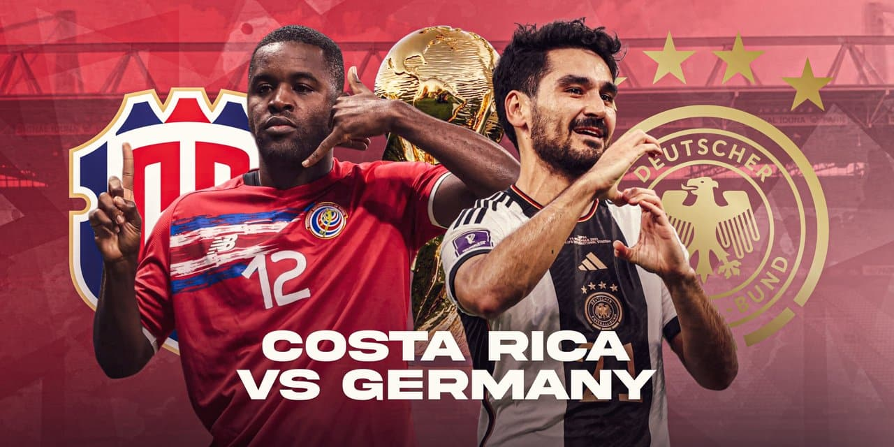
horário do jogo de Costa Rica e Alemanha
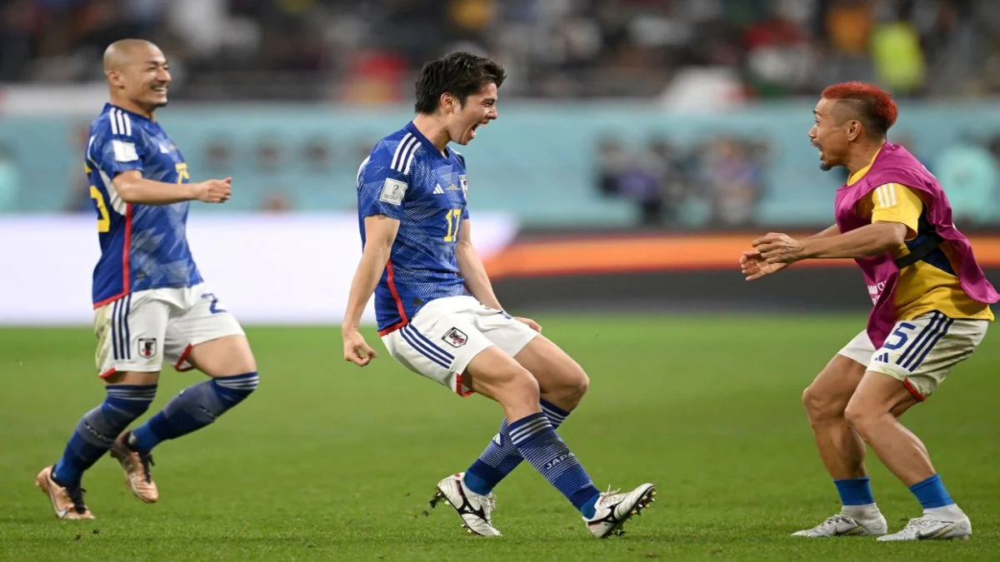
Copa do Mundo de 2022: Japão surpreende Espanha na liderança do Grupo E, enquanto Alemanha cai
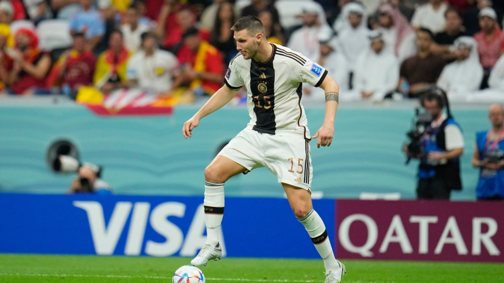
Alemanha Costa Rica Preview 2022 Copa do Mundo FIFA Qatar Grupo E
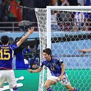
Japão se classificou do grupo da morte para duas Copas do Mundo consecutivas
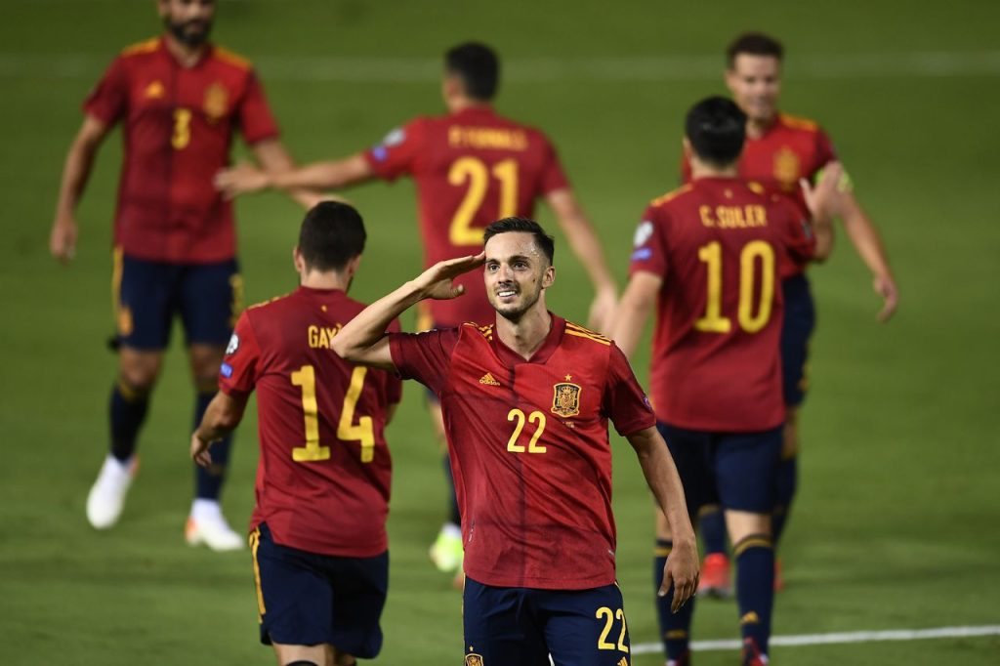
Espanha vs Costa Rica TRANSMISSÃO AO VIVO GRATUITA (23/11/22): Assista Copa do Mundo 2022 Online | Agora, EUA TV, canal
Estreando na Copa do Mundo 2022 nesta quarta-feira (23), a Alemanha voltou a se manifestar contra as decisões do Catar. Momentos antes de iniciar a partida contra o Japão, a seleção europeia posou para uma foto de equipe e, com as mãos nas bocas, os jogadores alemães protestaram contra a falta de direitos humanos do país sede do Mundial.
A decisão do país europeu acontece após o Catar proibir que capitães usassem a braçadeira com as cores da bandeira LGBTQIA+, além dos dizeres ‘One Love’, durante a passagem pelo Mundial.
De acordo com a FIFA, se as equipes optassem por usar a faixa em apoio à comunidade LGBTQIA+, as mesmas seriam punidas com multas e cartões amarelos. Ciente das punições que poderia receber, o goleiro Manuel Neuer, capitão da Alemanha, insistiu em usar a braçadeira e, junto de seus companheiros de equipe, protestou contra a decisão da entidade.
Nas redes sociais da equipe, a Alemanha explicou sua decisão em protestar. “Com a nossa braçadeira de capitão quisemos dar o exemplo pelos valores que vivemos na seleção: a diversidade e o respeito mútuo”, começou o país. “Não se trata de uma mensagem política: os direitos humanos não são negociáveis. Isso deve ser feito sem dizer. Mas infelizmente ainda não é. É por isso que esta mensagem é tão importante para nós”, completou
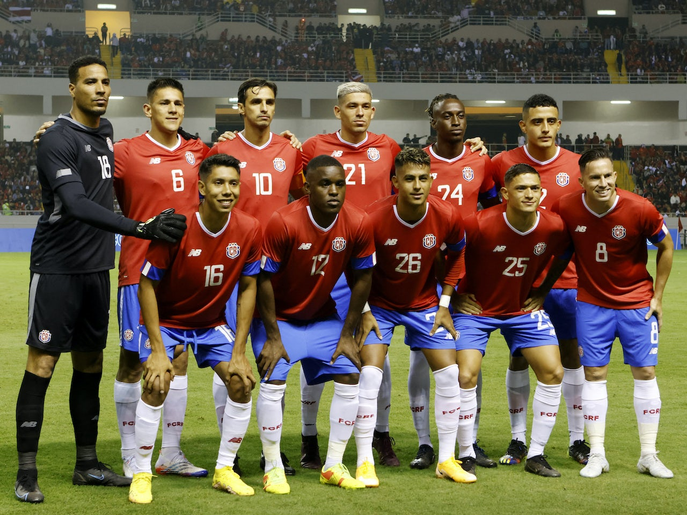
Costa Rica x Alemanha: Como as duas seleções se comparam antes do confronto da Copa do Mundo?
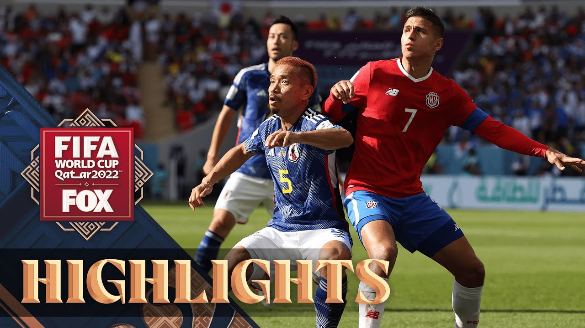
Japan vs. Costa Rica Highlights | 2022 FIFA World Cup
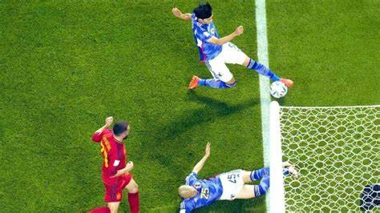
Copa do Mundo FIFA 2022: gol polêmico ajuda Japão a se classificar para as oitavas de final, internet dividida sobre VAR (ASSISTA)
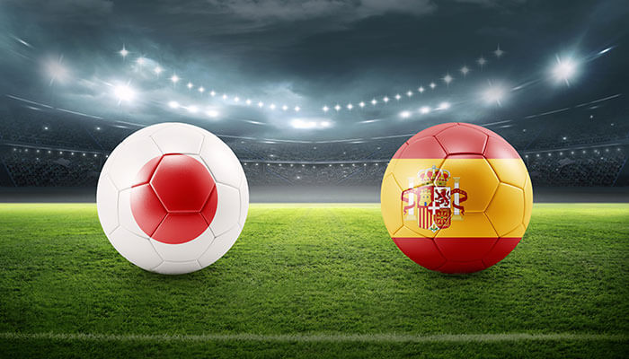
WORLD CUP PREVISÃO DO JOGO : JAPÃO VS ESPANHA | 1/12/2022
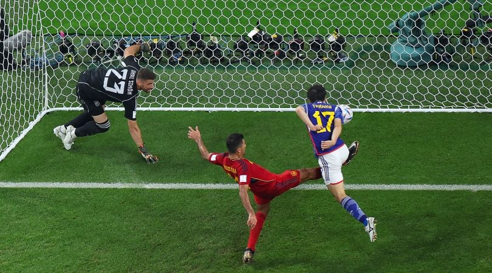
World Cup 2022: Spain lose to Japan in Group E and will meet Morocco in last 16
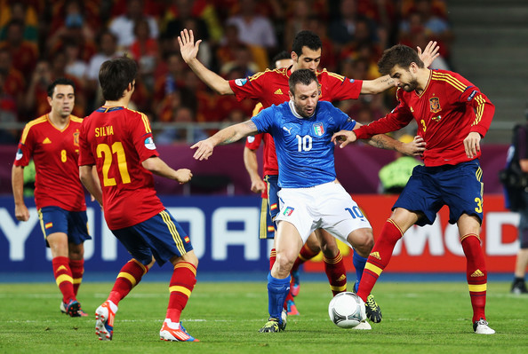
As estatísticas e curiosidades que resumem a fase de grupos da Copa do Mundo do Catar